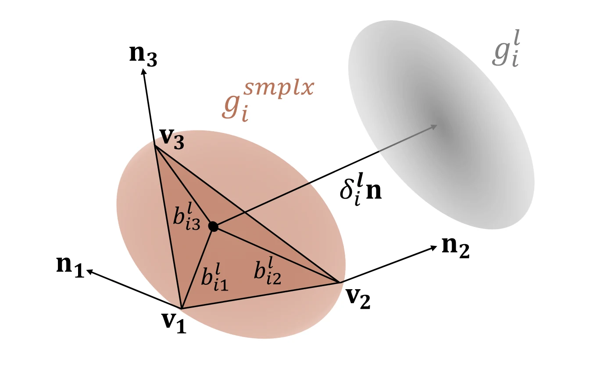
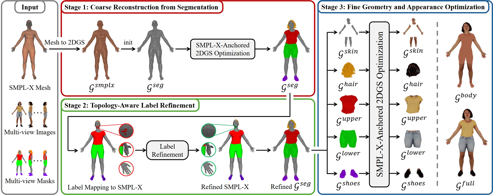
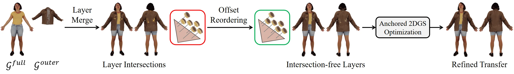
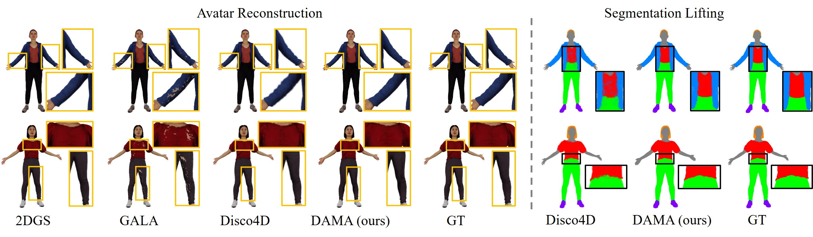
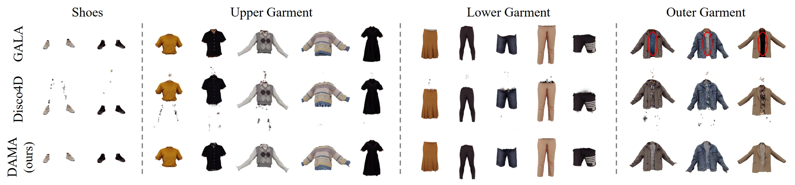

Abstract
Existing 3D clothed avatar reconstruction methods achieve high visual fidelity but ignore geometric structure and physical plausibility. They either model clothed humans as a single deformable surface or attempt garment disentanglement without enforcing geometric constraints, resulting in ambiguous garment boundaries and no control over stacking or layer ordering.
To address these limitations, we introduce DAMA (Disentangled body-Anchored Gaussians for Controllable Multi-layered Avatars), a 3D avatar reconstruction method that produces physically plausible clothed avatars through a dedicated representation and reconstruction method.
At the representation level, we bind Gaussians to SMPL-X faces using barycentric in-plane coordinates and a positive normal offset. Based on this parameterization, the reconstruction method lifts 2D segmentations to body-anchored Gaussians, refines layers using topology-guided correction, and jointly optimizes geometry and appearance.
DAMA is the first Gaussian avatar reconstruction method from multi-view images to achieve physically plausible layering, clean garment separation, and explicit stacking control. On the full 4D-DRESS dataset (82 scans), it achieves state-of-the-art performance in geometry reconstruction, garment separation, penetration rate, and penetration depth. The representation further supports user-defined garment reordering and fast conversion of body-conforming garments to simulation-ready meshes.
Reconstruction Results
DAMA reconstructs disentangled multi-layered avatars. Garments are reconstructed as separate layers with accurate boundaries. The body includes reconstructed visible skin and hair, while occluded regions are completed using the registered SMPL-X body.
Outfits with an Inner Garment Only
Outfits with an Outer Garment
Main Idea
Body-Anchored Gaussians for Physically Plausible Layering
DAMA introduces a novel Gaussian parameterization that explicitly encodes physical structure. Each Gaussian is bound to a SMPL-X face using barycentric coordinates and a strictly positive normal offset, preventing lateral drift, preserving semantic identity under deformation, and enforcing outward layer ordering by design.

Disentangled Multi-Layered Avatar Reconstruction
From multi-view images and segmentation masks, DAMA reconstructs body-anchored Gaussians bound to SMPL-X faces, refines garment layers via topology-aware label correction, and optimizes each layer independently to produce clean, intersection-free, and controllable multi-layered avatars.

Garment Transfer and Stacking
DAMA enables garment transfer, stacking, and reordering across avatars. Anchored garment layers can be transferred and merged with existing layers. Explicit layer ordering resolves collisions and supports consistent SMPL-X-driven animation.

Method Visualization
Stage 1: Coarse Reconstruction from Segmentation
Stage 1 lifts multi-view segmentation masks to coarse body-anchored Gaussians. Geometry and semantic labels are jointly optimized under segmentation supervision. The colors of SMPL-X Gaussians are randomized to stabilize alpha compositing and avoid overfitting to underlying body colors.
Stage 3: Fine Geometry and Appearance Optimization
Stage 3 refines each semantic layer with masked RGB supervision. Layers are optimized sequentially and independently for geometry and appearance. The colors of SMPL-X Gaussians are randomized to stabilize alpha compositing and avoid overfitting to underlying body colors.
Comparisons
Full-Avatar Reconstruction
DAMA reconstructs non-intersecting layered garments with accurate labels.

Garment Disentanglement
DAMA yields cleanly isolated garments through topology-aware refinement.

Comparison with Disco4D (360°)
Comparison with GALA (360°)
Applications
Retargeting and Layer Ordering
DAMA enables outfit composition and transfer across avatars. Our representation explicitly encodes layer order, allowing garments to be reordered consistently across views and animation frames (e.g., a shirt tucked into or worn over pants). The resulting layered avatars can be animated with SMPL-X-driven motion.
Garment Stacking
DAMA enables collision-free garment stacking through explicit layer ordering.
SMPL-X-driven Animation
DAMA supports animation by deforming all layers with SMPL-X articulation. The anchored representation preserves stable, intersection-free layering under motion.
Conversion to Meshes and Simulation
DAMA's physically plausible representation supports conversion of layered Gaussian avatars into simulation-ready meshes.
Individual Garment Simulation
Individual garments can be converted to meshes and simulated independently.
Full Outfit Simulation
Full reconstructed outfits can be converted and simulated consistently.
Stacked Garments Simulation
Transferred and stacked garments can also be simulated jointly.
Acknowledgements
This work is made possible by funding from the Carl Zeiss Foundation. This work is also funded by the Deutsche Forschungsgemeinschaft (DFG, German Research Foundation) – 409792180 (Emmy Noether Programme, project: Real Virtual Humans) and the German Federal Ministry of Education and Research (BMBF): Tübingen AI Center, FKZ: 01IS18039A. Daniel Eskandar is supported by the Konrad Zuse School of Excellence in Learning and Intelligent Systems (ELIZA) through the DAAD programme Konrad Zuse School of Excellence in Artificial Intelligence, sponsored by the Federal Ministry of Education and Research. Berna Kabadayi is supported by the International Max Planck Research School for Intelligent Systems (IMPRS-IS). Gerard Pons-Moll is a member of the Machine Learning Cluster of Excellence, EXC number 2064/1 – Project number 390727645.
BibTeX
@InProceedings{eskandar2026dama,
author = {Eskandar, Daniel and Kabadayi, Berna and Tiwari, Garvita and Pons-Moll, Gerard},
title = {DAMA: Disentangled Body-Anchored Gaussians for Controllable Multi-Layered Avatars},
booktitle = {Proceedings of the IEEE/CVF Conference on Computer Vision and Pattern Recognition Workshops (CVPRW)},
month = {June},
year = {2026},
pages = {5799--5811}
}